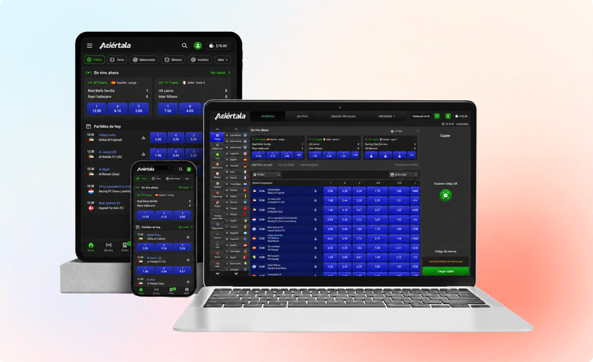
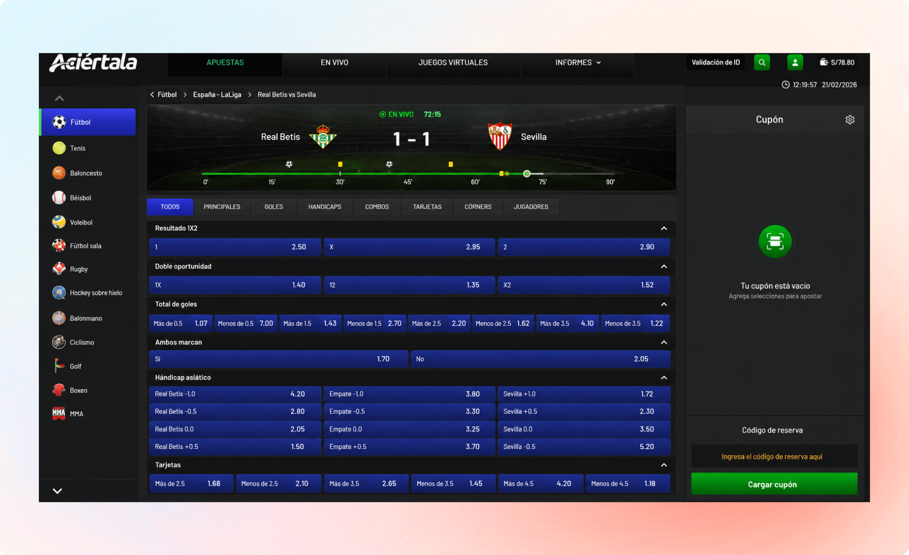

Encontrar eventos
Organizar deportes, ligas y partidos para reducir el esfuerzo de búsqueda.
Aciértala reúne deportes, ligas, eventos, mercados y cuotas dentro de un sportsbook con una oferta extensa. El diseño conecta la exploración de partidos con la selección de mercados y la construcción del ticket sin perder las elecciones realizadas durante la sesión.

Un usuario puede comenzar revisando fútbol, entrar a una liga, comparar varios partidos, consultar mercados adicionales y combinar selecciones de diferentes eventos.
El problema aparece cuando esa exploración empieza a competir con la apuesta que ya se está construyendo.
La interfaz debía permitir investigar nuevas alternativas sin perder de vista qué selecciones ya forman parte del ticket.
El sportsbook debía gestionar una oferta amplia sin obligar al usuario a empezar de nuevo cada vez que cambiaba de deporte, liga o partido.
Organizar deportes, ligas y partidos para reducir el esfuerzo de búsqueda.
Pasar de cuotas frecuentes a alternativas más específicas dentro del detalle del evento.
Conservar lo elegido mientras se revisan otros partidos y mercados.
El producto acompaña cuatro momentos diferentes, desde descubrir un evento hasta revisar qué se terminará apostando.
Descubrir deportes, eventos en vivo y próximos partidos.
Entrar a un encuentro para consultar una oferta más amplia de mercados.
Agregar selecciones y comprobarlas dentro del ticket antes de confirmar.
La pantalla principal concentra navegación por deportes, competiciones, partidos y cuotas sin obligar al usuario a abrir cada evento para comenzar a comparar.

Permiten acotar rápidamente la oferta visible.
Las apuestas frecuentes pueden seleccionarse sin abandonar la vista general.
Lo elegido permanece disponible mientras se continúa explorando.
Al entrar a un partido, la vista deja de priorizar descubrimiento y se concentra en el evento y sus mercados.
Marcador, equipos y estado permiten interpretar el encuentro antes de revisar categorías más específicas.
Cuando se selecciona una cuota, esta se incorpora inmediatamente al ticket. El usuario puede continuar explorando mientras conserva una referencia permanente de lo que ya eligió.

A medida que se agregan selecciones, el ticket reúne mercado, cuota, monto y posible ganancia antes de la confirmación.
Las decisiones buscan que explorar nuevos eventos no implique olvidar lo que ya se eligió ni perder claridad sobre qué terminará confirmándose.
Las selecciones permanecen disponibles mientras se revisan otros eventos.
Las opciones disponibles y su estado seleccionado se distinguen visualmente.
El listado muestra apuestas frecuentes y el detalle amplía las alternativas.
Marcador y tiempo reciben mayor prioridad cuando el partido está en vivo.
Una cuota cambia de estado al seleccionarse y aparece inmediatamente en el ticket.
Selecciones, cuota total, importe y ganancia posible pueden comprobarse antes de confirmar.
La solución conecta exploración, detalle de evento y ticket sin convertirlos en recorridos aislados.
El usuario puede revisar múltiples alternativas mientras la plataforma conserva las selecciones realizadas y muestra con claridad qué terminará confirmando como apuesta.